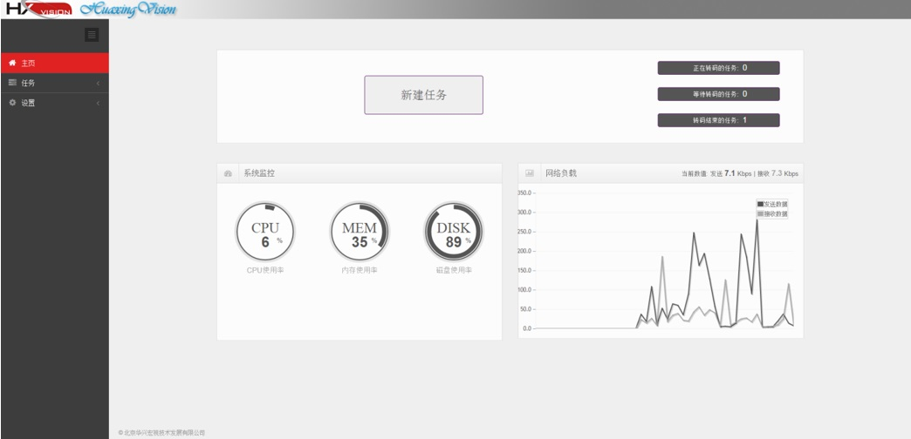
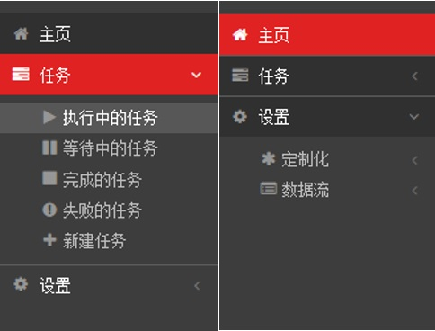

打开浏览器，在地址栏输入服务器IP地址+”:”+端口号（例如: http://192.168.1.204:8020 ），回车登陆转码系统，进入转码系统主页面，图1-1。主页面显示了系统任务模块、系统监控及网络负载情况。任务模块显示当前正在转码的任务、等待转码的任务和转码结束的任务的数目，同时提供新建任务入口。系统监控显示当前系统的CPU、内存、磁盘的使用情况。网络负载显示当前网络发送和接收的负载。

图 1-1. 系统主页面
主页面左侧为系统菜单，图1-2，菜单栏由主页、任务、设置三部分组成，其中任务、设置菜单下设二级菜单，用户可根据需求选择操作。

图1-2. 系统菜单